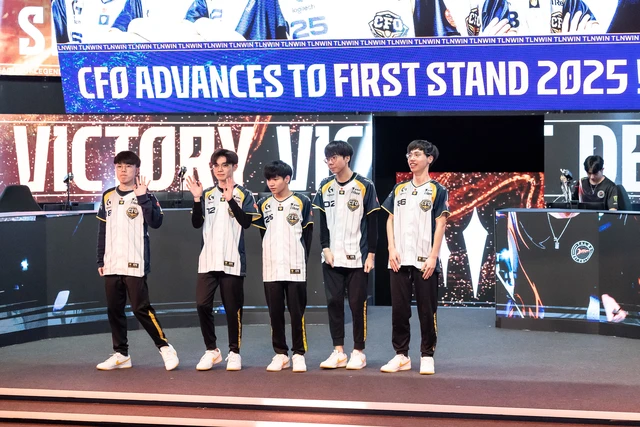

Tuyển thủ CFO bất ngờ "tri ân" VCS sau chiến tích tại First Stand 2025
"Anh cả LCP" có những chia sẻ hướng về các đội VCS sau thành tích tại First Stand 2025.
Tuyển thủ CFO "tri ân" các đội khu vực VCS
Tại First Stand 2025, đại diện đến từ LCP - CBTC Flying Oyster đã có những màn trình diễn đáng kinh ngạc. Đặc biệt, họ là đội duy nhất có thành tích gần như bất bại, chỉ thua HLE quá "out trình". Mới đây, theo tuyển thủ của CFO, chiến tích của "anh cả LCP" có công lớn từ các đội VCS.
Cụ thể, theo tuyển thủ Đường Trên River của CFO, việc đối đầu với các đội VCS giúp đội tuyển này có phương án đối phó với các giao tranh quá hỗn loạn cũng như cải thiện khả năng phòng thủ. Và những "bài học" này đã phát huy tác dụng ở First Stand 2025.
Tại LCP 2025, Team Secret Whales là đội tuyển VCS duy nhất đánh bại được CFO. Vào thời điểm đó, nhiều khán giả LMHT Việt thậm chí đánh giá CFO vẫn không đủ mạnh để có thể đại diện khu vực APAC tại First Stand. Nhưng từ sau trận thua đó, đội tuyển đến từ khu vực PCS càng đấu càng hay và cả hai đại diện còn lại của VCS (GAM và MVKE) đều là bại tướng của CFO.
Vẫn còn khoảng cách nhất định giữa VCS và PCS
Không thể phủ nhận, ngoại trừ GAM tụt phong độ bất ngờ, cả MVKE lẫn TSW đều có màn thể hiện ở mức chấp nhận được tại LCP 2025. Tuy nhiên, với việc các đội PCS đều có những sự bổ sung chất lượng bằng các tuyển thủ trở về từ LPL, vẫn tồn tại khoảng cách giữa các đội VCS và các đại diện PCS và khoảng cách này không thể khỏa lấp trong một sớm một chiều.
Tuy nhiên, với việc First Stand 2025 chỉ chọn 1 đại diện, ngay từ thời điểm ban đầu, không nhiều khán giả VCS lạc quan về viễn cảnh các đội từ LMHT Việt có thể tham dự giải. Nhưng đấu trường MSI và CKTG sẽ là những câu chuyện khác, khi số suất thi đấu đã được tăng lên rõ rệt. Chính vì vậy, các đội VCS cũng cần phải cải thiện thật nhanh chóng và trở lại để LMHT Việt có thể bắt kịp các đối thủ cùng nhóm.